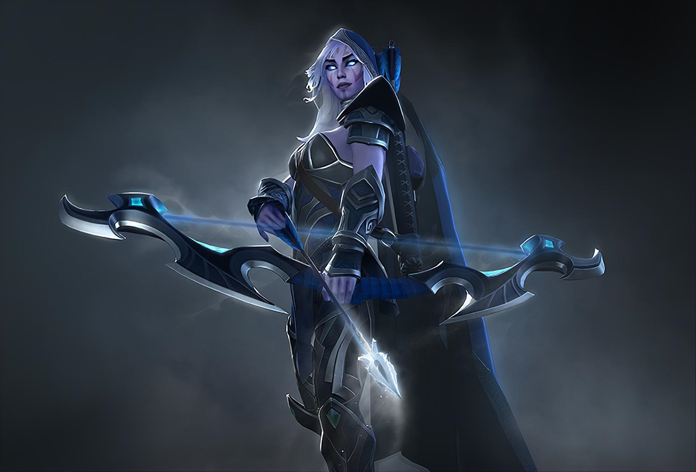
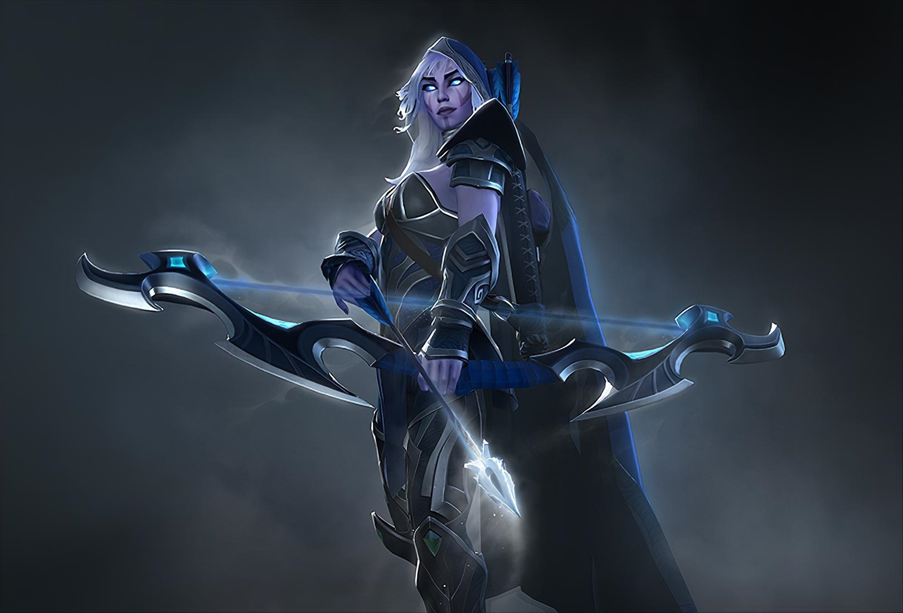

КИУКИ-19-3 Атаманюк
Кричат вороны, И спешно к городу летят. Зима на троне, И Родина зовёт назад. Но ты стоишь Среди бурана полугол. Зачем, глупыш, Зиме навстречу ты ушёл? Мир как врата За ними тысячи пустынь, И холода. Ты вечно будешь там один. Как будто дым, Что ищет холод в небесах, Блуждаешь ты. И бледный иней на губах. Лети, птенец! Лети с пустынной песней в даль. Закуй, глупец Ошмётки сердца в лёд и сталь. Кричат вороны. И спешно к городу летят Зима на троне. А где нет Родины - там ад.
 
